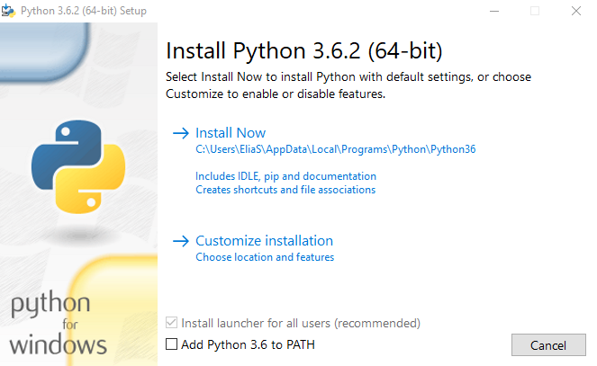
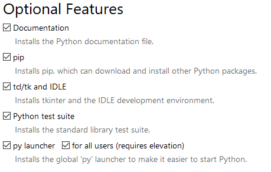

Manual FlaskInstalaciónEl entorno virtualHola mundoFunción RunUrl'sDobles decoradoresArchivos EstáticosVistasSintaxis de Jinja2Sentencias o instrucciones de Jinja2Declaración de bloques en jinja2Bases de Datos en FlaskFormulariosSistema de registro de usuariosManejo de CookiesUso de SesionesFunciones redirect y url_forMessage Flashing
En Windows la instalación es muy facil, sólo se necesita descargar alguna versión de python de su página oficial, en sus versiones mayores a 3.0. Al ejecutar el archivo, nos abrirá una ventana la de la cual seleccionaremos la opción de agregar al PATH (Add Python 3.x to PATH), y procederemos con la instalación personalizada (Customize installation)

Nos aseguraremos de elegir la opción de pip para que podamos instalar paquetes.

En Linux la instalación es más fácil, en las versiones más recientes tanto de Ubuntu o Debian, las versiones de python3 ya está habilitada por default. Lo único que hay que hacer es instalar el paquete de flask.
Para instalar pip en Linux deberemos escribir en terminal:
sudo apt-get install python3-pip
Si deseamos utilizar un entorno virtual, que es lo más recomendable, entonces escribiremos los sigueinte para instalar el paquete:
En Windows:
xxxxxxxxxxpip install virtualenvEn linux la instalación se hace desde los sources de tu distribución.
xxxxxxxxxxsudo apt-get install virtualnevUna vez instalado, para crear un entorno virtual escribiremos:
xxxxxxxxxxvirtualenv -p python3 entornoPara activar el entorno bastará escribir las siguientes lineas:
En windows:
xxxxxxxxxxcd entrono/Scripts/activate.batEl resultado será el siguente:
xxxxxxxxxx(entorno) C:\Entornos-Virtuales\entorno\Scripts>Nota: Previamente debiste haber creado bajo C:\ el directorio Entornos-virtuales
En linux:
xxxxxxxxxxsource entorno/bin/activateEl resultado será:
xxxxxxxxxx(entorno) usuario@pcname:~$
Dentro del entorno podremos instalar el paquete flask para no utlizarlo de forma global. Tanto en Windows como en las distros de Linux, lo único que debemos poner en terminal es el comando de instalación del paquete.
xxxxxxxxxxpip3 install flaskPara desactivar el entorno virtual sólo escribiremos:
xxxxxxxxxxdeactivate
Código base de flask
x# Archivo app.pyfrom flask import Flask app = Flask(_name_).route("/") #Decorador de Rutadef index(): return "Hola mundo"if __name__=="__main__": app.run()Decorador de Ruta indica la dirección a través de la cual vamos a poder acceder desde el navegador.
La primer línea indica que del modulo de flask se importará la clase Flask
xxxxxxxxxxfrom flask import FlaskLa función index devolverá la cadena "Hola mundo"
xxxxxxxxxxdef index():Para ejecuar la aplicación escribirmos
xxxxxxxxxxpython app.pyAl crear archivos de python se generan variables especiales, automáticamente. La vairable __name__ almacena el nombre del modulo en el que nos encontramos, el modulo se llama app.py, se le remueve la extension y sólo almacena app.
La viariable __main__indica que es un modulo principal, la siguiente condición indica que __name__ pasa a ser un modulo principal.
xxxxxxxxxxif __name__=="__main__":
Los parámetros que puede recibir la función pueden ser debug, port y host
El modo debug, indica que el modo debug está activo, de esta manera los cambios de nuestra aplicación se mostraran de forma automática sin reniciar el servidor.
xxxxxxxxxxapp.run(debug=True)El parametro port, indica bajo que puerto deseamos que se ejecute el servidor, por default se maneja el puerto 5000. Y por último.
xxxxxxxxxxapp.run(port=80)El parametro host, Indica bajo que dirección IP o dominio se mostrará la aplicación.
xxxxxxxxxxapp.run(host=127.0.1.1)En el siguiente ejemplo, se meuestra una configuración en desarrollo, bajo el puerto 80, para que pueda correr bajo este puerto, no deberá estar instalado en el servidor o en tu computadora ningun otro servidor que apunte a esta dirección tales como apache2/httpd, nginx, etc. Y por último, está ejecutandose bajo el dominio one.lan.
xxxxxxxxxxapp.run(debug=True, port=80, host=one.lan)La configuración en linux se hace en el archivo /etc/hosts.
xxxxxxxxxx127.0.0.1 one.lan usuarioMientras que en Windows se hace en la ruta c:\windows\system32\drivers\etc\hosts, y no se necesita agregar otro parametro más que la ip y el nombre de dominio.
xxxxxxxxxx127.0.0.1 one.lanEl decorador de ruta indica, precisamente, la ruta en la cual se mostrará la función que queremos ejecutar.
Por ejemplo, para mostrar la raíz de nuestra web simplemente colocaremos:
xxxxxxxxxx.route("/")Si queremos mostrar one.lan/hola, nuestro decorador deberá ser el siguiente:
xxxxxxxxxx.route("/hola")También podemos hacer uso de variables:
xxxxxxxxxx.route("/user/<string:user>")def user(user): return "hola " + userOtro ejemplo es una variable de tipo entero:
xxxxxxxxxx.route("/numero/<int:n>")def numero(n): return "numero: {}".format(n)xxxxxxxxxx.route("/user/<int:id>/<string:username>")def username(id,username): return "ID: {}, Nombre de usuario: {}".format(id, username)Con numeros flotantes:
xxxxxxxxxx.route("/suma/<float:n1>/<float:n2>")def numero(n1,n2): return "El resultado de la suma es: {}".format(n1 + n2)xxxxxxxxxxhttp://one.lan/suma/1.0/1.0El resultado de la suma es: 2.0
Podemos poner tantos decoradores como queramos, es decir, una funcion que se muestre en varias rutas:
xxxxxxxxxx.route("/default/").route("/default/<string:dft>")def dft(dft="valor"): return "El valor de dft es: {}" + dftEn el ejemplo se le asigna un valor, que literalmente se llama "valor" a la variable dft.
Los archivos estaticos son los elementos tales como css, js e imagenes. para crear el arbol del directorio es necesario escribir en nuestra terminal:
xxxxxxxxxxmkdir staticEntramos a nuestra carpeta que recien creamos, la cual se llama static. Y dentro de static crearemos los siguientes directorios:``
xxxxxxxxxxmkdir css js imgs Ahora bien, cuando ejecutamos nuestro servicio de flask, nos muestra el siguiente error:
xxxxxxxxxx127.0.0.1 - - [01/Jun/2020 11:28:23] "GET /favicon.ico HTTP/1.1" 404 -Este error sucede porque noencuentra el archivo favicon.ico, el cual es un icono que deberemos poner en la ruta /static/imgs/ dado que icono es un tipo de imagen.
El arbol de directorios quedará así:
xxxxxxxxxx.├── app.py└── static ├── css │ └── style.css ├── img │ └── favicon.ico └── js ├── main.js └── main.min.jsLo primero que crearemos es una carpeta llamada templates dentro del directorio de nuestro proyecto, quedando static y la presente carpeta dentro del directorio actual.
Para rendreizar los archivos importaremos la clase render_template a nuestro archivo app.py.
xxxxxxxxxxfrom flask import Flask, render_templateY modificaremos la función index la funcion ya no devolverá la cadena de texto hello world, ahora devolverá un archivo de html. remplazaremos el texto hello world por lo siguiente:
xxxxxxxxxx.route("/")def index(): return render_template("index.html")La función render_template buscará la carpeta llamada templates en donde estarán los archivos html que daran vista a nuestro proyecto.
Lo siguiente que haremos será crear el archivo index.html dentro de la carpeta templates:
xxxxxxxxxx<html><head> <meta charset="UTF-8"> <title>Document</title></head><body> <h1> Welcome! </h1></body></html>Vamos a usar una ruta relativa para mostrar nuestro favicon.ico
xxxxxxxxxx<link rel="shortcut icon" href="../static/imgs/favicon.ico">JInja2 nos permite intercambiar datos desde el backend hacia en frontend, tambien nos permite manejar los datos dentro de nuestras plantillas html.
xxxxxxxxxx.route("/")def index():titulo = "Home!" return render_template("index.html")Para compartir la variable titulo y su valor con nuestra vista, debemos pasar esa variable como argumento dentro de la funcion render_template.
xxxxxxxxxxreturn render_template("index.html", titulo=titulo)Siendo la primer palabra, de titulo, la variable como nos vamos a referir dentro del archivo html.
xxxxxxxxxx<body> <h1> {{ titulo }} </h1></body>Listar valores:
xxxxxxxxxx.route("/")def index():lista = ["footer","header","info"]titulo = "Home!" return render_template("index.html", titulo=titulo, lista=lista)xxxxxxxxxx<body> <h1> {{ titulo }} </h1> {% for value in lista %} <p>{{ value }}</p> {% endfor %}</body>Ruta relativa con jina2:
xxxxxxxxxx<link rel="shortcut icon" href="{{ url_for('static', filename='imgs/favico.ico') }}">Jinja2 nos permite declarar bloques, como plantillas base, para no generar nuevas plantilas y reutilizar un archivo. Crearemos un archivo de nombre base.html.
xxxxxxxxxx<!DOCTYPE html><html><head> <meta charset="UTF-8"> <title>Document</title></head><body> {% block content%} {% endblock %}</body></html>El archivo index.html lo modificamos, borraremos todo el contenido y escribiremos lo siguiente:
xxxxxxxxxx{% extends "base.html" %}Esta plantila se va a generar a partir del archivo base.html
xxxxxxxxxx{% extends "base.html" %}{% block content%} <h1> {{ titulo }} </h1> {% for value in lista %} <p>{{ value }}</p> {% endfor %}{%endblock%}Podemos declarar tos bloques como queramos dentro de nuestra plantilla, por ejemplo:
Archivo base.html
xxxxxxxxxx<head> <meta charset="UTF-8"> <title>{% block title %}{% endblock %}</title></head>Archivo index.html
xxxxxxxxxx{% extends "base.html" %}{% block title %}Index{% endblock %}{% block content%} <h1> {{ titulo }} </h1> {% for value in lista %} <p>{{ value }}</p> {% endfor %}{%endblock%}Conexión a la base de datos:
Lo primero es instalar la librería
xxxxxxxxxxpip install flask_sqlalchemyDentro de nuestro archivo app.py importamos la libreria de SQLAlchemy
xxxxxxxxxxfrom flask_sqlalchemy import SQLAlchemyAgregaremos la llamada a la base de datos
xxxxxxxxxxapp = Flask(_name_) db = SQLAlchemy(app)Se toma el nombre del modulo como parametro de la función SQLALchemy
Lo siguiente es hacer algunas configuraciones para indicar la ruta de la base de datos y para evitar que salgan errores:
xxxxxxxxxxapp.config["SQLALCHEMY_DATABASE_URI"] = dbdirapp.config["SQLALCHEMY_TRACK_MODIFICATIONS"] = FlaseAhora vamos a poner la ruta absoluta de la base de datos, lo primero es importar os:
xxxxxxxxxximport osAhora vamos a crear la variable seguido del conector
xxxxxxxxxxdbdir = "sqlite:///" + os.path.abspath(os.getcwd()) + "/basededatos.db"Ahora le deberemos indicar que si no existe la base de datos, la cree con la siguiente instrucción:
xxxxxxxxxxif __name__=="__main__": db.create_all() app.run(debug=True)Ahora vamos a crear una tabla:
xxxxxxxxxxclass Post(db.Model): id = db.Column(db.Integer, primary_key=True) title = db.Column(db.String(50))Crearemos otra ruta para insertar datos:
xxxxxxxxxx.route("/insert/default")def insert_default(): new_post = Post(title="Default title") db.session.add(new_post) db.session.commit() return "El post fue creado"Para hacer una consulta:
xxxxxxxxxx.route("/select/default")def select_default(): post = Post.query.filter_by(id=1).first() print(post.title) return "Query done."Para este ejemplo vamos a trabajar con los siguientes archivos.
Código index.html
xxxxxxxxxx{% extends "base.html" %}{% block title %}Home{% endblock %}{% block content %}<h1>Welcome!</h1><form method="get" action="{{ url_for('search') }}"><p><input type="text" name="nickname"></p><input type="submit" value="Search"></form>{% enblock %}Código signup.html
xxxxxxxxxx{% extends "base.html" %}{% block title %}Sign Up{% endblock %}{% block content %}<h1>Sign Up</h1><form method="post" action="{{ url_for('signup') }}"><p><input name="username" type="text"></p><p><input name="password" type="password"></p><input type="submit" value="Sign Up"></form>{% enblock %}A partir del código signup.html crearemos login.html, lo único que cambiaremos es todo el texto de Sign Up por Login, además la función de la acción debe tener lo siguiente:
xxxxxxxxxx<form method="post" action="{{ url_for('login') }}">Nuestro archivo app.py debe estar el esqueleto para trabajar con bases de datos.
xxxxxxxxxxfrom flask import Flask, render_templatefrom flask_sqlalchemy import SQLAlchemyimport osdbdir = "sqlite:///" + os.path.abspath(os.getcwd()) + "database.db"app = Flask(__name__)app.config["SQLALCHEMY_DATABASE_URI"] = dbdirapp.config["SQLALCHEMY_TRACK_MODIFICATIONS"] = Truedb = SQLAlchemy(app)if __name__=="__main__": db.create_all() app.run(debug=True)Vamos a crear un sistema de registro de usuarios, así que procederemos a crear nuestra clase users.
xxxxxxxxxxclass Users(db.Model): id = db.Column(db.Integer, primary_key=True) username = db.Column(db.String(50), unique=True, nullable=False) password = db.Column(db.String(80), nullable=False)unique nos indica que no existirán registros similares.nullable nos indica que no puede ir en blanco su valor.Vamos a crear la primer ruta:
xxxxxxxxxx.route("/signup")def signup(): passLas rutas están preparadas para recibir una petición de tipo GET, pero en nuestros formularios de regitro e inicio de sesión se mandan a través del método POST, así que debemos configurar la ruta para que pueda recibir el método POST o ambos. En el argumento de la ruta, el pasamos una lista llamada methods y se configurará de la siguiente manera.
xxxxxxxxxx.route("/signup", methods=["GET", "POST"])Para poder diferenciar cuando se envia una peticion GET o POST deberemos importar una clase de modulo de flask
xxxxxxxxxxfrom flask import Flask, render_template, requestY creamos la condicional:
xxxxxxxxxxif request.method == "POST": return render_template("signup.html") # Si no se cumple Primero debemos importar algunas funciones:
xxxxxxxxxxfrom werkzeug.security import generate_password_hash, check_password_hashAhora debemos hacer es cifrar la contraseña:
xxxxxxxxxxhashed_pw = generate_password_hash(request.form["password"], method="sha256")Vamos a construir el objeto que vamos a almacenar en la base de datos:
xxxxxxxxxxnew_user = Users(username=request.form["username"], password=hashed_pw)db.session.add(new_user)db.session.commit()return "Ya estás regsitrado exitosamente"Vamos a crear la ruta de login
xxxxxxxxxx.route("/login", methods=["GET","POST"])def login(): if request.method == "POST": user = Users.query.filter_by(username=request.form["username"]).first() if user and check_password_hash(user.password, request.form["password"]): return "Tú ya estas logueado" return "Tus credenciales son invalidas, revisa de nuevo" return render_template("login.html")Vamos a usar el método GET:
xxxxxxxxxx.route("/")def index(): return render_templeate("index.html").route("/search")def search(): nickname = resquest.args.get("nickname") user = Users.query.filter_by(username=nickname).first() if user: return user.username return "El usuario no existe"xxxxxxxxxxfrom flask import Flask, render_template, requestapp = Flask(_name_).route("/") def index(): return "Hola mundo"if __name__=="__main__": app.run(debug=True)Vamos a agregar una nueva clase del modulo flask, esta se llama make_response
xxxxxxxxxxfrom flask import Flask, render_template, request, make_response Ahora vamos a crear una nueva ruta:
xxxxxxxxxx.route("/cookie/set")def set_cookie(): resp = make_response(render_template("index.html")) return respNuestra variable resp se ha convertido en un objeto por recibir la función make_response(); Vamos a utilizar uno de sus metodos, set_cookie, para crear nuestra cookie.
xxxxxxxxxxresp.set_cookie("username", "Usuario")Este método como primer parametro recibe el nombre de nuestra cookie, en este caso es username; como segundo parametro va a recirbir, el valo que le asignaremos a nuestra cookie, que este caso es Usuario.
Ahora, la página nos mostrará como respuesta, entraremos en ella para generar la cookie:
xxxxxxxxxx<html lang="en"><head> <meta charset="UTF-8"> <meta name="viewport" content="width=device-width, initial-scale=1.0"> <meta http-equiv="X-UA-Compatible" content="ie=edge"> <title>Document</title></head><body> <h1> La cookie ha sido creada </h1></body></html>Ahora vamos a comprobar si la cookie ha sido creada:
xxxxxxxxxx.route("/cookie/read")def read_cookie(): username =request.cookies.get("username", None) return usernameEsto nos debe regresar el valor de nuestra cookie, que en nuestro caso es Usuario.
Para ver el funcionamiento de None, entonces agregamos:
xxxxxxxxxx.route("/cookie/read")def read_cookie(): username =request.cookies.get("username", None) if username==None: return "la cookie no existe" return usernameImportamos las siguientes librerias
xxxxxxxxxxfrom flask import Flask, render_template, request, session, escapeCon el siguiente código nos permitirá saber si el usuario está logueado o no
Modificaremos la ruta de login, donde se realiza la comprobacion entre los datos que se ingresan en el formulario y los que hay almacenados en la base de datos:
xxxxxxxxxxif user and check_password_hash(user.passowrd, request.form["password"]): session["username"] = user.usernamePara ver el reusltado, crearemos unanueva ruta:
xxxxxxxxxx.route("/home")La cual deberá contener el siguiente código
xxxxxxxxxxdef home(): if "username" in session: return "You are %s" % escape(session["usename"]) return "Debes loguearte primero"El for indica que si dentro de session existe la cookie llamada session. La expresión %s indica que vamos a formaterlo con una cadena de texto.
Ahora bien necesitareos una llve secreta
xxxxxxxxxxapp.secret_key = "cadena_secreta_de_caracteres_es_decir_un_hash"Ahora vamos a crear una ruta que nos permita desconectarnos, es decir, esta función nos permite cerrar una sesión.
xxxxxxxxxx.route("/logout")def logout(): session.pop("username",None) return "Estas deconectado"Importaremos las funciones que vamos a necesitar:
xxxxxxxxxxfrom flask import Flask, redirect, url_forvamos a crear una nueva ruta
xxxxxxxxxx.route("/start")def start(): return url_for("index") La función url_for apunta a otra función que esté contenida dentro de una ruta, dentro de una decorador de ruta.
xxxxxxxxxx# función anterior.route("/")def index(): return "Hola mundo!" El resultado será / la función url_for regresará la cadena de texto de la url a la que está apuntando, regresrá su ruta que es la raíz ya que es la función index.
Si pasamos el siguiente parametro:
xxxxxxxxxxreturn url_for("start", next="login" ) # El resultado será /start?next=loginEs un formato de url basado en el método GET
Ahora veremos el uso de la función redirect, la cual como su nombre indica nos redireccionara a alguna página o ruta en especifico.
xxxxxxxxxx.route("/redireccion")def redireccion(): return redirect("https://www.google.com")Uso de los dos en conjunto:
xxxxxxxxxx.route("/post/<int:id>")def post(id): return "Mostrando post: {}".format(id).route("/today") # El post de hoydef today(): return redirect(url_for("post", id=50, next=edit))El resulatdo será
xxxxxxxxxxMostrando post: 50Y el navegador mostrará la ruta
xxxxxxxxxx/post/50?next=edit